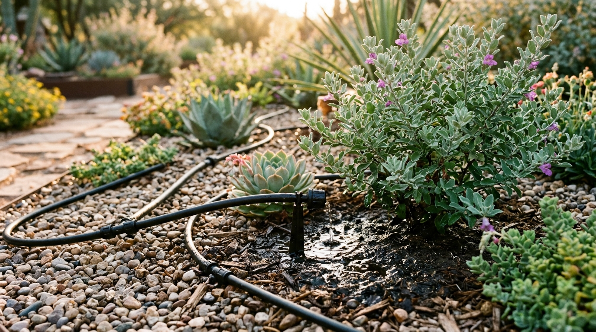
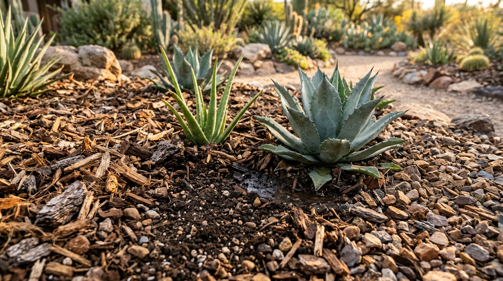
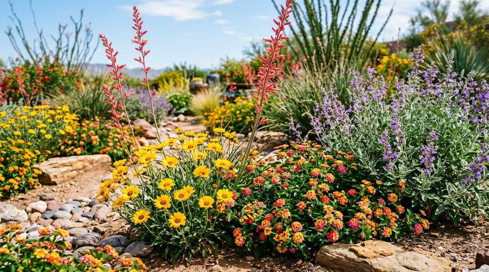
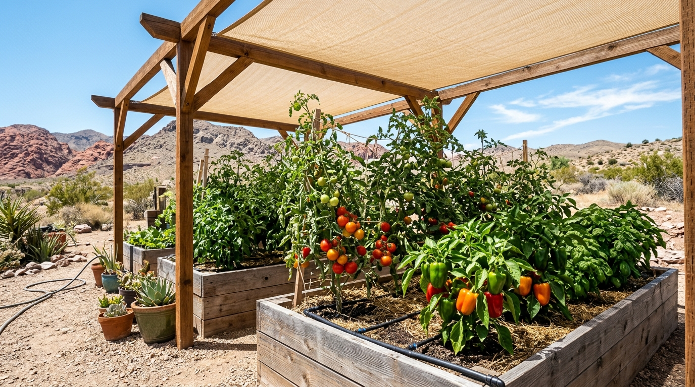

Why Nevada Summers Are Different
Nevada gardens face extreme heat, low humidity, intense UV, alkaline soil and rapid evaporation. Success comes from conserving water, protecting roots and choosing heat-tolerant plants. This guide focuses on sustainable, low-water practices for Las Vegas, Reno and the surrounding desert.
Watering Schedule
Water early morning (5–7 AM) to reduce evaporation. Avoid midday watering. Use drip irrigation for efficiency.

| Plant type | Frequency (peak summer) | Depth |
|---|---|---|
| Lawns (bermuda/fescue) | 2–3x per week | 6 in |
| Trees & shrubs | 1–2x per week | 18–24 in |
| Vegetables | Daily to every other day | 8–10 in |
| Container plants | 1–2x daily | Full pot |
| Succulents/cacti | Every 2–3 weeks | Soak & dry |
Soil & Amendments
Nevada soils are typically alkaline, salty and low in organic matter. Improve with compost and gypsum.
- Test pH (aim 6.5–7.5); add sulfur to lower alkalinity.
- Mix 2–3 in of compost into beds annually.
- Use gypsum to break up clay and improve drainage.
- Flush salts with deep watering every 4–6 weeks.
- Avoid over-fertilizing in heat; use slow-release formulas.
Mulch: Your Best Friend
Mulch reduces soil temperature by up to 10°F and cuts evaporation by 50%+.

Organic mulch
Bark, wood chips, straw. Apply 3–4 in. Keep 2 in away from trunks.
Inorganic mulch
Gravel/rock for desert landscapes. Reflects heat—use light colors near plants.
Compost top-dress
Thin layer under mulch feeds soil biology and retains moisture.
Heat-Tolerant Plant Picks
Select desert-adapted native and drought-hardy plants that bloom and stay vibrant in triple-digit heat.

Vegetables
Okra, peppers, eggplant, sweet potatoes, Armenian cucumber, heat-tolerant tomatoes (Solar Fire, Heatmaster).
Herbs
Rosemary, thyme, oregano, basil (afternoon shade), mint (containers).
Flowers
Lantana, vinca, portulaca, zinnia, salvia, desert marigold.
Trees & shrubs
Palo verde, mesquite, Texas sage, red yucca, desert willow, olive.
Daily Timing & Shade
Protect vulnerable plants with physical shade cloth barriers when intense UV and solar exposure peak between 12 PM and 5 PM.

- Plant in early spring or fall; avoid midsummer planting.
- Shade cloth (30–50%) over veggies during peak afternoon (12–5 PM).
- Harvest early morning when produce is crisp and cool.
- Prune lightly; heavy pruning stresses plants in heat.
- Fertilize in cooler months; pause high-nitrogen feeds in July–August.
Pest & Disease Watch
- Spider mites: fine webbing; rinse leaves, increase humidity.
- Aphids: hose off; introduce ladybugs.
- Whiteflies: yellow sticky traps, neem oil.
- Blossom end rot: calcium + consistent watering.
- Sunscald: shade fruit; don't over-prune canopy.
Weekly Summer Checklist
- Check soil moisture 2–3 in deep before watering.
- Inspect for pests and disease (undersides of leaves).
- Top up mulch where thin.
- Harvest ripe produce promptly.
- Adjust irrigation timers for heat waves.
- Flush salts monthly.
- Remove dead/diseased foliage.
Privacy Policy
summercontrol respects your privacy. This site is an informational garden maintenance guide and does not collect personal data by default.
- No accounts: We do not require registration or login.
- Analytics: We may use anonymous, aggregated analytics to understand page usage. No personally identifiable information is stored.
- Cookies: Only essential cookies (if any) are used for basic site functionality. No advertising or tracking cookies.
- Third parties: We do not sell or share your data with third parties.
- Contact: Questions about this policy? Reach out via the site contact.
Last updated: November 2026.
Terms of Service
By using summercontrol, you agree to the following terms.
- Informational only: Content is provided for general guidance and is not professional horticultural or agricultural advice.
- No warranties: We make no guarantees about plant survival, yields, or results; garden outcomes depend on many factors.
- Use at your own risk: You are responsible for how you apply this information in your garden.
- Intellectual property: All content is © summercontrol. You may share links but not republish without permission.
- Changes: Terms may be updated; continued use constitutes acceptance.
Last updated: November 2026.